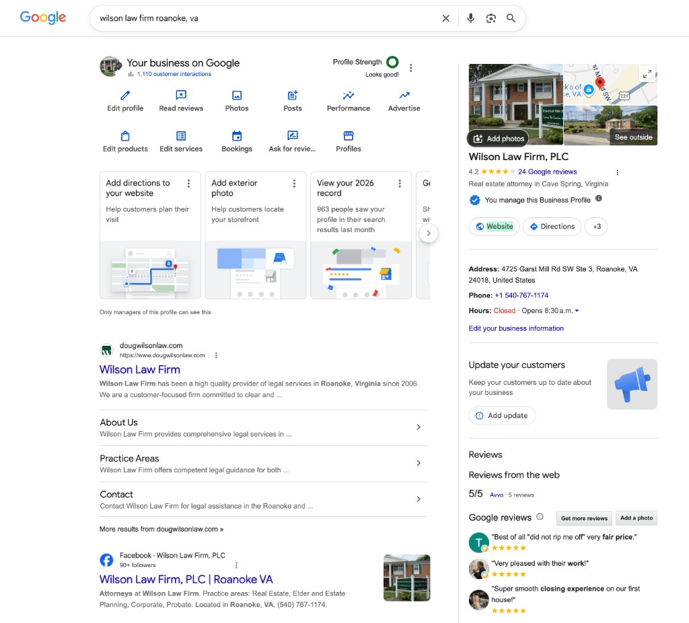

This report outlines the digital presence and SEO review for Wilson Law Firm, PLC. The goal is a strong, credible online presence — not broad consumer marketing.
SEO and reputation work takes time and focus. For an established Roanoke practice, we prioritize accuracy, trust, and local visibility over aggressive acquisition tactics.
Here’s what we’re doing and not doing
In scope
- Vendor / tool review
- Website SEO hygiene
- Google Business Profile audit
- Review monitoring process
- Keep / replace / discontinue recommendations
- Light ongoing presence support
Out of scope
- Aggressive consumer PPC
- High-volume blog content mills
- Influencer outreach
- Contested-litigation lead gen
- Broad national SEO campaigns
Executive summary
August snapshot
Review kicked off with tracking, evidence filing, and a public site pass. Google Business Profile and Squarespace admin access confirmed. Google Analytics has been added to the site (G-NWL3L04PQQ, along with Google Search Console.
Brand search is healthy: dougwilsonlaw.com ranks #1 with sitelinks; GBP shows 4.2★ / 24 reviews and ~963 profile views in search last month. Squarespace AI Visibility: 3 of 10 OpenAI prompts. Site traffic last 30 days: 582 visits (+6%).
582
Visits · last 30 days (+6%)
10
Form submissions (−38% MoM)
13.2%
Contact form CVR
Baseline
Google Business Profile
Wilson Law Firm, PLC
Real estate attorney · Cave Spring, VA
4725 Garst Mill Rd SW Ste 3
+1 540-767-1174
Profile strength: Looks good!
Google asks: directions on site
Google asks: exterior photo
Avvo 5/5 · 5 reviews
Evidence: _assets/gbp/2026-08-25_gbp-serp-manager-overview.png
SERP evidence
Brand search
Query: wilson law firm roanoke, va

dougwilsonlaw.com
Website
Squarespace
Home · Practice Areas · About · Contact
Real estate · Corporate/LLC · Estate · Probate
#1 organic + sitelinks
Google Search Console added
SQSP SEO score 80% · meta 4/4 · alt 21/21
Google Analytics GA4 · G-NWL3L04PQQ
Sitemap.xml returning errors
Copy / trust quick wins
Squarespace · OpenAI
AI Visibility
80%
Search visibility score (Good)
3/10
Prompts visible
4/4
Pages with metadata
Visible
- Probate / estate admin · Roanoke (branded)
- Real estate closings · Roanoke (branded)
- LLC + buy-sell near Roanoke (non-branded)
Alt text 21/21 complete. Score is platform hygiene — not a Google rank.
Name collision: “Schedule a meeting with Wilson Law Firm” cites Tempe AZ / St. Paul MN — not Roanoke.
When local: Probate + Roanoke hits correctly — cites dougwilsonlaw.com, phone, and email.
Not visible (sample)
- Schedule a meeting (branded) → other Wilson firms
- Wills / trusts / POA (branded)
- Most generic “find an attorney” prompts
Evidence: _assets/squarespace/2026-08-25_ai-visibility-openai-run.png · 2026-08-25_seo-ai-visibility-overview.png · 2026-08-25_ai-prompt-schedule-meeting-miss.png · 2026-08-25_ai-prompt-probate-roanoke-hit.png
Squarespace · last 30 days
Site traffic
582
Visits (+6%)
913
Pageviews (+7%)
66%
Bounce rate
Sources
Direct · 372
Google · 158
Bing · 11 · Other · 41
Audience shape
- Desktop-heavy traffic
- Chrome primary browser
- Windows leading OS; iOS / macOS next
- Weekday peaks · weekend troughs
Jul 27 – Aug 25, 2026 · Evidence: _assets/squarespace/2026-08-25_traffic-last-30-days.png · Pair with GA4 G-NWL3L04PQQ going forward
Engagement · site content
Top pages
| Page | Views | Time | Bounce | Exit |
|---|---|---|---|---|
| Home | 541 | 58s | 64% | 64% |
| Practice Areas | 141 | 1m 20s | 60% | 50% |
| About Us | 130 | 2m 27s | 94% | 69% |
| Contact | 101 | 1m 30s | 72% | 61% |
Home is 59% of pageviews. About holds attention longest but bounces high — typical for bio landings. Practice Areas has the strongest continue-on rate (lowest exit).
913 pageviews (+7%) · Site avg time on page 77s · Evidence: _assets/squarespace/2026-08-25_engagement-site-content.png
Forms & buttons
Conversions
10
Form submissions (−38% MoM)
37
Button clicks (−12% MoM)
13.2%
Contact form CVR
/contact · 10 submissions
Sparse daily pattern
Volume is modest for a credibility-focused firm — treat form submissions as a primary monthly KPI. The MoM drop is a small-sample swing; watch next month before reacting.
Jul 27 – Aug 25, 2026 · Evidence: _assets/squarespace/2026-08-25_form-button-conversions.png
Open items
Findings
| Area | Finding | Priority | Status |
|---|---|---|---|
| Technical | Sitemap.xml errors (500); still referenced in robots.txt | High | Open |
| On-page | Home typo “WIlson”; Contact “not secure” language | Med | Open |
| Site structure | /cart present; practice areas on single page | Low–Med | Open |
| GBP | Directions link + exterior photo suggestions; full categories/services TBD | Med | In progress |
| Brand SERP | #1 organic + sitelinks; Facebook #2 | Positive | Noted |
| Vendors | Paid SEO / review tools not yet inventoried | High | Waiting |
| AI Visibility | 3/10; schedule prompt cites other Wilson firms (AZ/MN) — name collision | Med | Monitor |
| Traffic | 582 visits / 30d (+6%); Direct ~64% · Google ~27% | Info | Baseline |
| Pages | Home 541 · Practice Areas 141 · About 130 · Contact 101 | Info | Baseline |
| Conversions | 10 forms (−38% MoM); Contact CVR 13.2%; 37 button clicks | Med | Monitor |
| SQSP SEO | Visibility Score 80%; metadata 4/4; alt text 21/21 | Positive | Noted |
Status
Access & inputs
Confirmed
- Google Business Profile
- Squarespace admin
- Google Analytics GA4 · G-NWL3L04PQQ
- Google Search Console
- First GBP SERP screenshot filed
- AI Visibility baseline run filed
- Squarespace traffic 30d baseline filed
- Engagement / top pages baseline filed
- Form & button conversions baseline filed
- Squarespace SEO score overview filed (80%)
Still needed
- GBP edit profile · categories · services · hours
- Reviews list / reply screen
- Squarespace pages + SEO settings
- GSC Sitemaps + Coverage screenshots
- Confirm GA property user access
- Vendor & cost list
Action items
Next steps
- Finish GBP audit from live profile screenshots
- Complete Squarespace SEO pass
- Pull GSC Sitemaps + Pages/Coverage screenshots (check prior sitemap 500)
- Confirm GA property user access for G-NWL3L04PQQ + optional realtime check
- Draft vendor keep / replace / discontinue memo
- Define review monitoring + response SOP
- Propose light ongoing support cadence
- Re-check AI Visibility monthly (trend vs 3/10); prefer Roanoke/VA in prompts
- Reinforce Roanoke / Virginia entity clarity (site + GBP) to reduce name collision
- Act on GBP suggestions (directions · exterior photo) if approved
By keeping listings accurate and the site trustworthy, we protect the firm’s reputation where clients already look — Google and dougwilsonlaw.com.